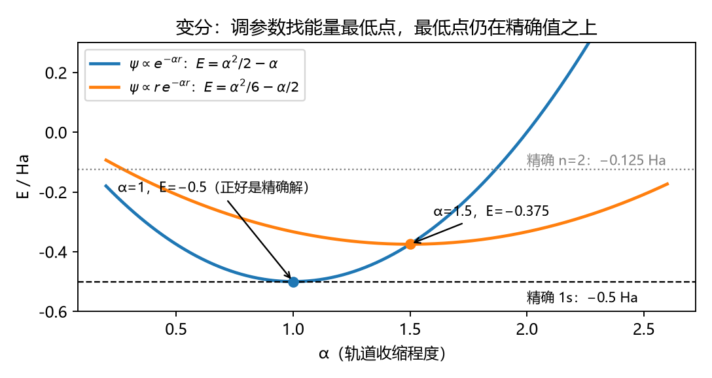
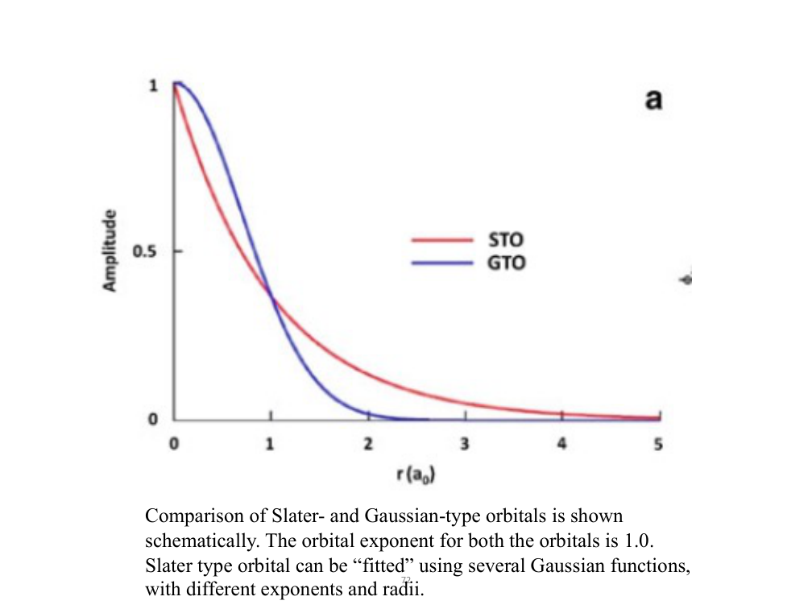
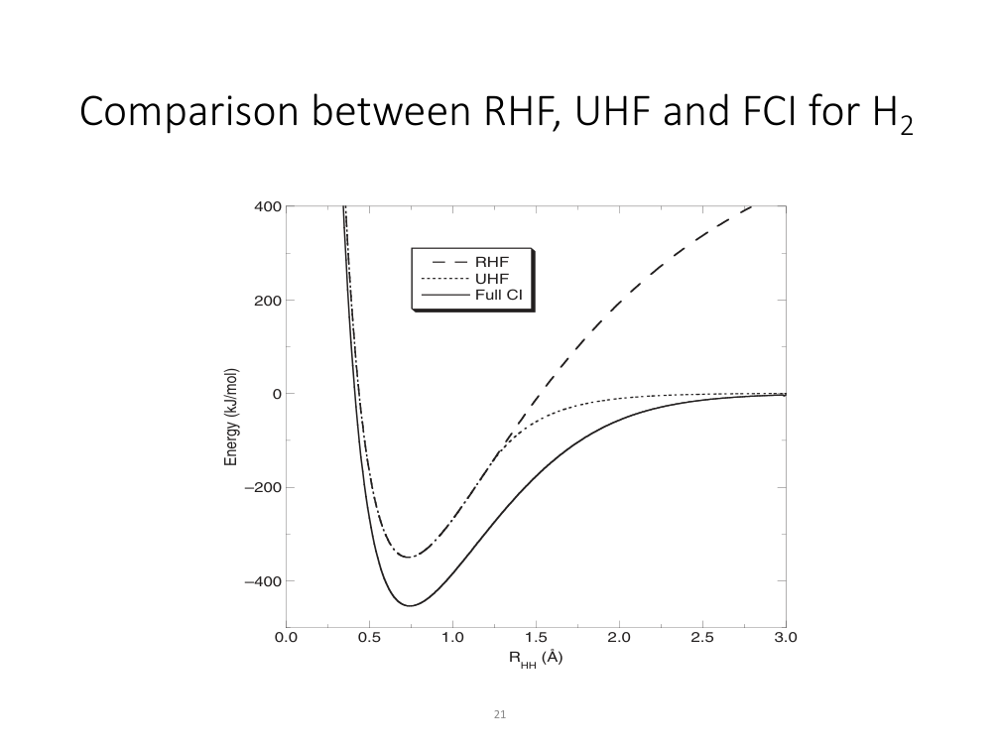
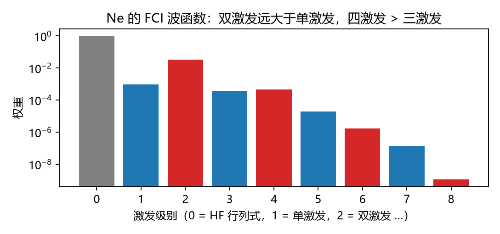

CM5235 Applied Computational Chemistry · 期中题库
第二批：L3 变分原理、SCF 实现与基组 · L4 电子相关方法（CI、CC、MP、BSSE）
格式和第一批一样：判断 公式辨析，情景 给数据或现象要你分析，单选 多选 选项是几种不同的推理，计算 简单的数值计算，简答 写出推理过程。每题后面依次是答案、思路、公式在说什么、关联。
部分情景题的数据取自你 HW1 和 HW2 的实际计算结果，题目里写成“某同学”。
L3 · 变分原理、SCF 的实现、基组
L3 回答的是“HF 到底怎么在计算机上算出来”：变分法调参数 → 行列式的能量怎么写 → 密度矩阵和 SCF 循环 → 积分太多怎么办 → 用什么函数展开轨道（基组）。
A 变分法与行列式的能量
情景 计算 3.1 用两种试探函数计算氢原子（精确基态能量 −0.5 Ha）。算出的能量随参数 α 变化的关系如下：

答案 非束缚（连续谱）态 上。权重虽然小，但每一份的能量代价很大，所以能量误差不小。思路 ：变分法的每一步都是在用期望值公式。能量是加权平均，一个很小的权重乘上一个很大的能量差，照样能造成可观的误差。
公式在说什么 变分法的实际操作（L3）给定函数形式 里的最佳解。要进一步改进，只能增加参数（扩大基组）或者换函数形式（讲义原话）。
计算 3.2 用“行列式能量规则”写能量：\(E = \sum_ih_{ii} + \sum_{i<j}\left(J_{ij} - \delta_{\sigma_i\sigma_j}K_{ij}\right) + V_{NN}\)（求和遍历所有电子 ，\(\delta_{\sigma_i\sigma_j}\) 表示两个电子自旋相同时才有交换项）。
答案
(a) 先数单电子项：\(2h_{11} + h_{22} + h_{33}\)，两种构型相同。
再数电子对（共 4 个电子，\(C(4,2) = 6\) 对）：
电子对 Coulomb A（2α、3α）的交换 B（2α、3β）的交换 1α–1β \(J_{11}\) 无（反自旋） 无 1α–2α、1β–2α \(2J_{12}\) \(-K_{12}\)（与 1α） \(-K_{12}\) 1α–3、1β–3 \(2J_{13}\) \(-K_{13}\)（3α 与 1α） \(-K_{13}\)（3β 与 1β） 2–3 \(J_{23}\) \(-K_{23}\)（同为 α） 无（反自旋）
\(E_A = 2h_{11} + h_{22} + h_{33} + J_{11} + 2J_{12} + 2J_{13} + J_{23} - K_{12} - K_{13} - K_{23}\)
\(E_B = E_A + K_{23}\)
(b) \(E_B - E_A = K_{23} > 0\)：两个未成对电子自旋平行时，多了一项交换稳定化。
(c) A 就是“高自旋”（HS）行列式，B 就是“破缺对称”（BS）行列式。讲义 L3 p45 指出，这两个行列式的能量差就是磁交换作用，这正是 L5 BS-DFT 的出发点（HW2 Ex5）。
思路 ：不用背公式，数电子对就行。每一对电子贡献一个 J；只有自旋相同的电子对才额外贡献 −K。
公式在说什么 任意单个行列式 都成立，包括开壳层。第一批里的闭壳层公式 \(2\sum H + \sum(2J - K)\) 只是它在“每个轨道都双占据”时的特例。
判断 3.3 HF 轨道的“身份”：正则轨道、自然轨道、局域轨道
把 HF 的占据轨道彼此任意混合（做一个幺正变换），行列式和总能量都不变。
局域化之后的轨道（比如一根 C–H 键上的轨道）也有确定的轨道能。
Koopmans 定理只对正则轨道（使 Fock 矩阵对角的那一组）成立。
RHF 的自然轨道占据数只能是 2 或 0。
HOMO 的形状是一个可以直接测量的物理量。
答案
说法 判断 理由 (1) ✓ 行列式的一个性质：把某一列加上另一列的倍数，行列式的值不变。所以占据轨道之间怎么混合，Ψ 都不变，能量、电子密度也都不变。 (2) ✗ 局域轨道不再是 Fock 算符的本征函数，Fock 矩阵在它们下面不是对角的，所以没有“轨道能”可言（L6 原话：“there is no such thing as the energy of a localized orbital”）。 (3) ✓ 推导中要用到 \(\langle\varphi_i|\hat F|\varphi_i\rangle = \varepsilon_i\)，并且 F 是对角的，只有正则轨道满足这一点。 (4) ✓ 单个闭壳层行列式的密度矩阵只有两种本征值：占据轨道为 2，虚轨道为 0。相关方法（CI）的自然轨道会出现 1.98、0.02 这样的分数占据，它们偏离 2 和 0 的程度，正好反映了电子相关的强弱。 (5) ✗ 由 (1)，轨道可以任意混合而物理不变，所以单个轨道的形状不是可观测量。可以测量的是电子密度（X 射线衍射）。HOMO 图只是一种便于解释的选择（正则轨道）。
关联 (1) 是 L6 轨道局域化（Boys、Pipek–Mezey）能成立的理由；局域轨道让远处的积分近似为零，从而降低相关方法的标度。(4) 在 L4 CASSCF 中用来判断哪些轨道应该放进活性空间：占据数明显偏离 2 或 0 的那些。
情景 单选 3.4 要计算孤立 B 原子（\(1s^22s^22p^1\)）的基态。讲义说“动手之前先想一想波函数长什么样”。最恰当的判断是：
只有一个未成对电子，UHF 就能很好地描述
2p 电子可以放在 \(p_x\)、\(p_y\)、\(p_z\) 三个简并轨道中的任何一个，真实波函数是这三个行列式等权重的组合。HF 只能选其中一个，会破坏原子的球对称性。这是静态相关问题，需要 CASSCF 这类多组态方法
用更大的基组就能解决
B 原子太小，不需要考虑电子相关
答案：B
思路
先数有几种能量相同的放法：一个电子、三个简并轨道 → 3 个能量相同的行列式。
孤立原子是球对称的，没有理由偏向哪一个方向，所以精确波函数是 \(\frac{1}{\sqrt3}(|..p_x| + |..p_y| + |..p_z|)\) 这样的组合。
HF（无论 RHF 还是 UHF）都只优化一个 行列式，天生就写不出这种组合。
换大基组只是让那一个行列式更灵活，行列式个数不变，问题依旧（C 错）。
判断何时需要多组态 ：只要存在几个能量接近、占据方式不同的行列式（简并或近简并），单个行列式就不够。
对比：B 在分子里（比如 BH₃）时，三个 p 轨道不再简并，一种占据方式明显更低，单行列式就又可以用了。
关联 同一逻辑还出现在：O₂ 的 \(^1\Delta_g\)（第一批 2.9 题）、H₂ 解离（L4）、Cu₂ 单重态（L5 BS-DFT），以及过渡金属中 3d 和 4s 近简并的情况。
判断 3.5 RHF、ROHF、UHF 与自旋污染（以双重态自由基为例）
同一个自由基，\(E_{UHF} \le E_{ROHF}\)。
ROHF 波函数是 \(\hat S^2\) 的本征函数。
UHF 比 RHF 计算更快，因为变量更多。
Hamiltonian 里没有显式出现自旋，所以翻转所有电子的自旋，能量不变。
对 UHF 结果做“自旋投影”（annihilation 或 projection），目的是去掉混入的高自旋成分。
答案
说法 判断 理由 (1) ✓ ROHF 要求成对电子共用空间轨道，UHF 没有这个限制。约束更少，变分能量只会更低或相等（讲义 p51 的能级图：UHF 在 ROHF 之下）。 (2) ✓ 双占据的轨道里 α、β 电子的空间部分相同，只剩下单占据轨道里的电子，它们自旋都平行，构成纯的高自旋态。代价是能量比 UHF 略高。 (3) ✗ 正好相反。restricted 需要计算的积分更少，速度更快（讲义 p52）。UHF 要为 α、β 各解一套方程。 (4) ✓ 这是 restricted 方法成立的依据：既然 Hamiltonian 对自旋是对称的，就可以强制 α、β 共用空间轨道（讲义 p51）。 (5) ✓ UHF 行列式是几个自旋态的混合，投影就是把不想要的那些成分去掉。“annihilation”在 SCF 结束后做，“projection”在 SCF 循环中做。
B 密度矩阵、SCF 循环、收敛技巧
计算 3.6 H₂ 最小基组：两个 H 的 1s 函数 \(\chi_A\)、\(\chi_B\)，重叠积分 \(S_{AB} = 0.66\)。成键轨道 \(\varphi_1 = (\chi_A + \chi_B)/\sqrt{2(1+S_{AB})}\)，占据 2 个电子。
答案 思路 ：电子总数 = 密度对全空间的积分。把轨道展开后，积分就变成 \(\sum P_{\mu\nu}S_{\mu\nu}\)，其中每一项 \(P_{\mu\nu}S_{\mu\nu}\) 表示“有多少电子来自基函数对 μν”。L6 的各种布居分析，都是在这些项上决定怎么分配。
公式在说什么
关联 L6 的 Mulliken 电荷、Löwdin 电荷、键级都从 \(\mathbf{PS}\) 出发；L5 的 DFT 同样由 \(\mathbf P\) 构造 \(\rho(\mathbf r)\)。
情景 多选 3.7 计算一个过渡金属配合物时，SCF 的能量在两个值之间来回跳，100 轮都不收敛。输出显示 HOMO–LUMO 能隙只有 0.02 Ha。下列分析和做法正确的是：
能隙很小时，每一轮新构造的 Fock 矩阵都可能让占据轨道和空轨道的顺序对调，电子在两种占据方式之间来回，于是能量振荡
阻尼 \(D'_{n+1} = \omega D_n + (1-\omega)D_{n+1}\)：把上一轮的密度混进来，让每一步变化变小，抑制振荡
Level shifting：人为抬高空轨道的能量（加大能隙），减少每一步占据轨道和空轨道的混合。收敛更稳，但有可能收敛到一个局部极小（错误的态）
DIIS：用前几轮 Fock 矩阵的线性组合外推，使误差 \(\mathbf{FDS} - \mathbf{SDF}\) 最小。收敛时这个误差为零
换更大的基组一定能解决收敛问题
答案：A、B、C、D
思路
为什么会振荡 ：Fock 矩阵由密度构造，密度又由 Fock 矩阵的最低 N/2 个轨道决定。两个轨道能量几乎相同时，某一轮 a 低一点，电子就填 a；用新密度构造的 F 又让 b 更低，下一轮电子就填 b……如此来回。三种技巧针对的是同一个问题的不同环节：阻尼让密度变化慢一点；level shift 让能隙变大；DIIS 利用历史信息，直接“猜”一个更接近自洽的 F。
E 错：大基组反而常常更难收敛，比如加了弥散函数后，近线性相关的函数会带来数值问题。
更深一层 ：能隙很小，本身就提示这个体系可能有近简并，也就是静态相关（3.4 题）。SCF 不收敛，有时不是数值问题，而是在提醒你单个行列式不适合这个体系。
公式在说什么
判断 3.8 SCF 实现中的细节
判断 SCF 收敛时，只看能量变化就够了，不需要看密度矩阵。
Level shifting 会改变最终收敛的 HF 总能量。
DIIS 中 \(\sum c_i = 1\) 的约束保证：如果历次的 F 都已经相同，外推结果仍是它本身。
分子有对称性、初猜也对称时，SCF 在迭代中会一直保持这个对称性，一般不会自己跑到对称性破缺的解上去。
Newton–Raphson 类方法利用轨道 Hessian（二阶导数），在接近收敛时很快，但每一步都比 DIIS 贵。
答案
说法 判断 理由 (1) ✗ 能量对波函数误差是二阶的（第一批 2.6 题）：密度误差为 \(10^{-3}\) 时，能量误差大约只有 \(10^{-6}\)。能量看起来收敛了，密度（以及由它算出的偶极矩、电荷、梯度）可能还不准。所以两个判据都要看。 (2) ✗ Level shift 只改变迭代的路径。收敛时占据–空轨道之间的混合为零，这个人为的平移不影响行列式本身，最终能量不变（前提是收敛到同一个态）。 (3) ✓ 这是个自洽性要求：外推不能把已经收敛的结果“推”走。 (4) ✓ 对称的初猜得到对称的 Fock 矩阵，对角化后得到对称的轨道，一路保持。所以做 BS-DFT 或者拉长键的 UHF 时，必须人为 给一个不对称的初猜（混合 HOMO 和 LUMO），或者做波函数稳定性检查。HW1 Ex2 遇到的正是这个问题。 (5) ✓ 讲义 p68：Hessian 很贵，所以一般先用 DIIS，DIIS 失败再用 NR 或 CG。
情景 计算 3.9 一个分子用了 K = 400 个基函数，每个积分用 8 字节的双精度数存储。
答案 思路 ：这道题把 L1 的“存储层级”（硬盘慢、内存快）和 L3 的“积分数目”接起来了。存还是算、4 指标还是 3 指标，本质上都是在用空间换时间，或者用时间换空间。
公式在说什么 RI（density fitting）：\((\mu\nu|\lambda\sigma) \approx \sum_{PQ}(\mu\nu|P)[\mathbf V^{-1}]_{PQ}(Q|\lambda\sigma)\)，其中 \(V_{PQ} = (P|Q)\)
C 基组与对称性
计算 3.10 （基函数计数）用下面的规则数基函数：
答案 23 。34 。41 。22 个原始函数 ，收缩成 9 个基函数。思路 ：先按角动量数：s 算 1 个，p 算 3 个，d 算 5 个（球谐）或 6 个（笛卡尔）。再按 zeta 数和附加函数逐层加上去。电子数和占据轨道数与基组无关，基组只影响虚轨道数。
公式在说什么 收缩 Gaussian：\(\chi(\mathbf r) = Y_{lm}(\theta,\varphi)\sum_id_ie^{-\alpha_ir^2}\)一个 变分参数。
判断 3.11 Slater 函数、Gaussian 函数与各种附加函数
Gaussian 函数在核处导数为零（没有尖点），远处衰减得太快，所以单个 Gaussian 描述原子轨道比单个 Slater 函数差。
尽管如此，量子化学普遍用 Gaussian，是因为两个 Gaussian 的乘积仍是一个 Gaussian，所有双电子积分都能解析计算。
给 H 原子加 p 函数（极化函数），是为了描述 H 的 2p 激发态。
阴离子的计算通常需要弥散函数，因为多出来的那个电子束缚得很弱，分布在离核较远的地方。
基组越大，计算出的所有性质（几何、偶极矩等）都一定越接近实验值。

讲义 L3 p72：STO 与 GTO 的对比，以及用几个 Gaussian 拟合 STO 答案
说法 判断 理由 (1) ✓ 真实波函数在核处有尖点（第一批 2.7 题：s 电子在核处有振幅），远处按 \(e^{-\zeta r}\) 衰减。Gaussian 在这两个位置都不对（讲义 p73）。 (2) ✓ 这是速度上的巨大优势。补救办法是用几个 Gaussian 收缩成一个函数。讲义中 ADF 程序使用 Slater 函数，代价是要做数值积分。 (3) ✗ 极化函数的作用是让电子云能够变形 ：s 函数和 p 函数组合后，H 的电子云可以偏向键的一侧。它描述的是基态在分子环境中的极化，不是 2p 激发态。 (4) ✓ 讲义 p75–76 和 L5 的建议：“Anions require extra diffuse functions.” (5) ✗ 变分原理只保证能量 随基组增大而降低。其他性质和能量差可能因为误差抵消而在小基组上碰巧更好（L4 p5 的原话）。
情景 多选 3.12 几个计算任务，各自的基组选择是否合理？
计算 F 原子的电子亲和能（F → F⁻）：用 aug-cc-pVTZ，因为 F⁻ 需要弥散函数
计算含 Au 的配合物：对 Au 使用有效核势（ECP），它顶替了内层电子，同时隐含地包括了主要的相对论效应
计算 NMR 自旋–自旋耦合常数：需要在核附近加紧致（tight）s 函数
计算水二聚体的氢键结合能：用 STO-3G 就够了，因为氢键主要是静电作用
计算 EPR 超精细耦合：在普通价层基组上加弥散函数就够了
答案：A、B、C
思路 ：问自己“这个性质取决于电子在哪里”。
电子亲和能、阴离子、Rydberg 态：电子在远处 → 需要弥散函数（A 对）。
超精细耦合、NMR J 耦合：取决于核处的自旋密度 \(|\psi(0)|^2\) → 需要紧致 函数（C 对，E 错）。
重元素：内层电子速度接近光速，非相对论基组描述不了 → ECP 或相对论哈密顿量加配套基组（B 对，见 L6）。
D 错：最小基组连分子本身的电荷分布都描述不好；而且弱相互作用计算中 BSSE 很大（L4），需要足够大的基组并做 counterpoise 校正。
计算 3.13 某分子有 K 个基函数。利用点群对称性，Fock 矩阵被分成 2 个大小相等的对角块（不同对称性的轨道之间矩阵元为零）。
答案 破缺 了这个对称性（比如 BS 态、Jahn–Teller 畸变体系），强制对称就会把你锁在一个较高的解上（参见 3.8 题 (4)）。思路 ：对称性来自 \([\hat H,\hat R] = 0\)（第一批 2.4 题），于是不同不可约表示之间的矩阵元为零，矩阵变成分块对角的。这是物理规律，不是一种近似。
情景 单选 3.14 下面四个任务应该分别选什么类型的程序（不考关键词，只考“它算的是什么”）？
① VASP（平面波）② OpenMolcas ③ ORCA ④ MOPAC
① Gaussian ② VASP ③ MOPAC ④ OpenMolcas
全部用 Gaussian，因为它功能最全
① OpenMolcas ② ORCA ③ VASP ④ Gaussian
答案：A
思路 ：关键看基函数的类型和方法的定位。
周期性固体 ：波函数要满足晶格周期性，用平面波展开最自然（VASP）。平面波铺满整个晶胞，不属于任何一个原子，所以没有 BSSE ，也不存在“把基函数放在哪个原子上”的问题。多组态方法 ：OpenMolcas 专门做 CASSCF、CASPT2、RASSI（课程计划中 HW3 的内容）。ORCA ：RI 加速、BS-DFT、光谱性质（HW2）。MOPAC ：半经验方法，忽略或参数化大部分双电子积分（L3 p62：“Semi-empirical methods are based on partial neglect of two-electron integrals”），所以极快，适合大规模筛选。
L4 · 电子相关方法
L4 的主线：HF 缺少相关能 → 把激发行列式加进来（CI） → 全部加进来太贵（FCI 阶乘增长），截断又带来大小不一致 → 用指数形式组织激发（CC） → 或者把相关当作微扰（MP2） → 实际计算中还要处理 BSSE 和基组外推。
A 两种相关、CI 矩阵
情景 多选 4.1 下列体系或现象中，哪些以静态 相关为主（单个行列式在定性上就是错的）？
平衡键长附近的 He 原子和 Ne 原子
H₂ 拉长到 3 Å
孤立的 B 原子（2p 三重简并）
两个 Ar 原子之间的色散吸引
双核 Cu(II) 配合物的开壳层单重态
答案：B、C、E
判断方法 ：看有没有几个能量接近、占据方式不同的行列式需要以相当的权重同时出现。
B：\(\sigma_g^2\) 和 \(\sigma_u^2\) 的能量随键长拉长趋于简并，解离极限两者权重相等（见 4.2 题）。
C：三个 p 轨道简并（3.4 题）。
E：两个 Cu 上各有一个未成对电子，单重态至少需要两个行列式（L5）。
A：HF 行列式占绝对主导（Ne 的 HF 权重约 0.96），缺的是大量小权重激发带来的“电子互相躲避”，属于动态相关。
D：色散来自两个原子中电子瞬时涨落的关联，每个原子本身都是闭壳层，也属于动态相关（L6 的非共价作用会详细讲）。
公式在说什么 \(E_{corr} = E_{exact} - E_{HF}\)（L4 p3），这是 Löwdin 的定义大 权重的行列式，要用多组态方法（CASSCF）。小 权重的激发，单参考方法（MP2、CCSD(T)）就擅长处理。
计算 4.2 H₂ 最小基组：两个空间轨道 \(\sigma_g\)、\(\sigma_u\)，2 个电子。
答案

讲义 L4 p21：RHF、UHF、FCI 的 H₂ 解离曲线
情景 计算 4.3 把 4.2 题简化为 2 × 2 的 CI 问题：\(\begin{pmatrix}E_0 & K\\K & E_2\end{pmatrix}\)，\(E_0 = -1.10\)，\(E_2 = -0.40\)，耦合 \(K = 0.18\)（单位 Ha，均为示意值）。
答案 思路 ：CI 是“把两个态放在一起对角化”，无论它们靠得多近都能处理；微扰论假设“另一个态很远、只是小修小补”（\(|K| \ll |E_2 - E_0|\)）。一旦近简并，这个前提就不成立了。这就是为什么 MP2、CCSD 这类单参考方法在键断裂时会失败，而多组态方法不会。
公式在说什么 二阶微扰（L4 p28–35）降低 能量。
判断 4.4 Brillouin 定理与单激发
HF 行列式与所有单激发行列式之间的 Hamiltonian 矩阵元为零。
因此在 CISD 中，单激发完全不起作用，可以直接去掉。
只包含单激发的 CIS，基态能量就等于 HF 能量。
CIS 可以用来计算激发态。
答案
说法 判断 理由 (1) ✓ 这是 HF 轨道“最优”的另一种表述：如果 HF 行列式还能通过和某个单激发混合来降低能量，那说明轨道还没优化好。收敛的 HF 已经把这一点用尽了。 (2) ✗ 单激发不和 HF 直接耦合，但会和双激发耦合，因此间接 地影响基态（Ne 中单激发的权重约 \(10^{-3}\)，不是零）。单激发对偶极矩等性质尤其重要，因为它们描述的是轨道的弛豫。 (3) ✓ 基态与所有单激发都不耦合，对角化后基态仍然是 HF 行列式本身。 (4) ✓ 激发态本身主要由单激发构成，CIS 在单激发空间里对角化，就相当于第一批 2.14 题中“能隙加上电子–空穴相互作用”。HW1 Ex6 就用了 CIS。
情景 单选 4.5 Ne 原子的 FCI 波函数中，各激发级别的权重如图所示。下列解释最合理的是：

双激发权重最大，是因为双激发的行列式数目最多
Hamiltonian 最多只含双电子算符，所以只有双激发能与 HF 直接耦合（单激发又被 Brillouin 定理排除）。四激发比三激发还多，是因为四激发中很大一部分是“两对电子各自独立地做双激发”的乘积
高激发的权重小，说明它们对能量没有贡献，可以忽略
这说明 Ne 是一个静态相关很强的体系
答案：B
思路
\(\hat H\) 中的 \(1/r_{ij}\) 一次只作用在两个电子上，一步最多只能把两个电子同时“踢”到别的轨道。所以与 HF 行列式直接耦合的只有单激发和双激发，而单激发又被 Brillouin 定理排除了。
四激发权重（\(4.5\times10^{-4}\)）大于三激发（\(3.7\times10^{-4}\))：原子里有好几对电子，每一对都在独立地“互相躲避”。两对电子同时躲避，就表现为两个双激发的乘积，也就是四激发。
这正是 CC 的出发点：\(e^{\hat T_2} = 1 + \hat T_2 + \frac12\hat T_2^2 + \cdots\)，其中 \(\frac12\hat T_2^2\) 自动用双激发振幅的乘积生成这类四激发，不需要单独的参数。
A 错：数目最多的其实是更高的激发（L4 p15 的表中五、六激发的 CSF 数最多），但它们的权重很小。D 错：HF 权重 0.96，说明是典型的动态相关。
B 截断 CI、CC、MP 的性质
情景 多选 4.6 两个 He 原子相距 100 Å，完全没有相互作用。He 只有 2 个电子，对单个 He 原子，CISD 就是 FCI。下列说法正确的是：
\(E_{CISD}(\text{He}\cdots\text{He}) = 2E_{CISD}(\text{He})\)
\(E_{CISD}(\text{He}\cdots\text{He}) > 2E_{CISD}(\text{He})\)，因为二聚体的 CISD 里缺少“两个原子同时各做一次双激发”的四激发
CCSD 满足 \(E(\text{He}\cdots\text{He}) = 2E(\text{He})\)
体系中这种不相互作用的单元越多，CISD 能找回的相关能所占比例就越小
MP2 也是大小一致的
答案：B、C、D、E
思路
精确波函数应当是两个原子波函数的乘积：\(\Psi_A\Psi_B = (1 + D_A)(1 + D_B)\Phi_0 = (1 + D_A + D_B + D_AD_B)\Phi_0\)。
\(D_AD_B\) 是四激发。二聚体的 CISD 只允许到双激发，把这一项砍掉了，所以能量偏高（B 对，A 错）。讲义中两个水分子的例子是同样的道理。
CC 用 \(e^{\hat T}\)：\(e^{\hat T_A + \hat T_B} = e^{\hat T_A}e^{\hat T_B}\)，指数函数天然可以分解成乘积，所以截断到 CCSD 也仍然大小一致（C 对）。
D：单元越多，“同时发生的激发”越多，被 CISD 砍掉的部分越大。无穷多个单元时，CISD 找回的相关能比例 → 0。这就是为什么 CISD 不能用于大体系。
E：MP2 的能量是各电子对贡献的简单求和，相距很远的两组电子之间积分为零，自然可以分成两部分。
公式在说什么
判断 4.7 各方法的两个性质：是否变分、是否大小一致
CISD 是变分的，但不是大小一致的。
CCSD 既是大小一致的，又是变分的。
FCI 两者都满足。
一个方法算出的能量比精确值还低，说明程序一定出了错。
讲义中 Be 原子的 MP7 找回了 100.15% 的相关能，这不违反任何原理。
答案
说法 判断 理由 (1) ✓ CISD 是在一个受限的函数空间里对角化 Hamiltonian，所以是变分的；但它缺少乘积形式的激发（4.6 题），不满足大小一致。 (2) ✗ CC 的能量是通过投影方程求出来的（L4 p25：用 \(\Psi_0\) 左乘再积分），而不是对 \(\langle\Psi|\hat H|\Psi\rangle\) 求最小值，所以不受变分原理约束。 (3) ✓ FCI 是给定基组下的精确解。 (4) ✗ 只对变分方法成立。MP、CC 这类非变分方法可能略低于精确值（不过对正常体系，CCSD(T) 通常仍在上方）。 (5) ✓ MP 级数不是变分的，可以越过精确值，甚至振荡或发散。讲义中 MP7 = 100.15% 就是越过的例子。
判断 4.8 MP2 能量公式 \(E_{MP2} = \sum_{i<j}^{occ}\sum_{a<b}^{virt}\dfrac{|\langle ij\|ab\rangle|^2}{\varepsilon_i + \varepsilon_j - \varepsilon_a - \varepsilon_b}\)
对闭壳层基态，分母总是负的，所以 \(E_{MP2} \le 0\)。
\(E_{MP0} + E_{MP1} = E_{HF}\)，所以 MP 的“第一个真正的相关修正”是 MP2。
HOMO 和 LUMO 能量很接近时，MP2 的相关能会被严重高估。
MP2 需要像 CCSD 那样迭代求解振幅方程。
分母中用到了 HF 虚轨道的轨道能。
答案
说法 判断 理由 (1) ✓ 占据轨道能低于虚轨道能，所以 \(\varepsilon_i + \varepsilon_j - \varepsilon_a - \varepsilon_b < 0\)，而分子是模的平方。这就是 4.3 题中 \(E^{(2)} \le 0\) 的具体形式。 (2) ✓ \(E_{MP0} = \sum\varepsilon_i\)（Fock 算符之和的本征值），第一批 2.13 题说过它把电子排斥算了两遍；\(E_{MP1}\) 正好把多算的那部分减掉，两者之和就是 \(E_{HF}\)。所以 MP1 并不带来相关能。 (3) ✓ 分母 → 0，同 4.3 题 (c)。这时应该考虑多组态方法。 (4) ✗ MP2 是一次性的求和：HF 算完，把积分转换到分子轨道基下，直接相加即可。最贵的一步是积分转换，标度为 \(N^5\)。CCSD 才需要迭代，标度为 \(N^6\)。 (5) ✓ 所以 MP2 的质量取决于 HF 虚轨道的质量。虚轨道是“N+1 电子”的轨道（第一批 2.14 题），这也是 MP2 对基组，尤其是虚轨道空间，非常敏感的原因。
情景 单选 4.9 讲义中的基准测试表：成键长度的 RMS 误差，HF 为 0.021 Å，CCSD(T) 为 0.013 Å；原子化能的 RMS 误差，HF 为 86 kcal/mol，MP2 为 22–24，CCSD(T) 为 11.5。为什么 HF 的几何结构“还行”，能量却差得离谱？
HF 的几何优化算法比能量计算更精确
几何结构只取决于势能面在平衡点附近的形状 ，这附近相关能变化不大，误差大部分被抵消；原子化能要比较分子和完全分开的原子，所有键都断开，相关能的变化最大，没有什么可以抵消
原子化能的实验值不准
HF 不满足变分原理
答案：B
思路 ：计算化学的结果几乎都是
能量差 。两个状态的电子结构越相似，方法的系统误差抵消得越多。
几何：比较的是“键长稍长”和“键长稍短”，电子结构几乎一样，误差大体抵消。
原子化能：比较的是“成键的分子”和“孤立的原子”，电子对的数目和排布完全不同（第一批 2.10 题 F₂ 的道理），误差无法抵消。
这也解释了讲义为什么反复提醒“For properties other than energy, a higher correlation level method does not necessarily mean a more accurate answer”：性质的准确度取决于误差是否抵消，而不单看方法的级别。
C BSSE、基组外推、方法选择
计算 4.10 计算某二聚体的结合能（数据为示意，单位 Ha）：二聚体全部基组 下（另一个单体只放基函数，不放核和电子，即“鬼原子”）：\(E_A^{AB} = -76.1975\)，\(E_B^{AB} = -76.1968\)。
答案 为什么会降低 ：变分原理。多了一些可以用的函数，单体的波函数就更灵活，能量只会降低或不变。在二聚体中，每个单体都“借用”了对方的基函数，能量因此额外降低，看上去就像两者互相吸引，但这部分吸引是基组不完备造成的假象（讲义 p37：“non-physical attraction”）。
公式在说什么 \(\Delta E_{CP} = E_{AB}^{AB} - E_A^{AB} - E_B^{AB}\)（L4 p38）
计算 4.11 用 cc-pVnZ（n = 2, 3, 4）算某分子，得到 \(E_2 = -76.2410\)、\(E_3 = -76.3320\)、\(E_4 = -76.3600\) Ha。用讲义的外推公式 \(E_n = E_{CBS} + \alpha e^{-\beta n}\) 求完备基组极限 \(E_{CBS}\)。为什么至少需要三个基组？
答案：\(E_{CBS} \approx -76.3724\) Ha
思路
公式有 \(E_{CBS}\)、α、β 三个未知数，所以需要三个方程，也就是三个基组。
相邻两项之差：\(E_3 - E_2 = \alpha e^{-3\beta}(1 - e^{\beta})\)，\(E_4 - E_3 = \alpha e^{-4\beta}(1 - e^{\beta})\)。两者之比 \(r = e^{-\beta} = \dfrac{-0.0280}{-0.0910} = 0.308\)。
从 n = 4 往后，每多一级 ζ，能量的改进都是上一步的 r 倍，构成等比数列。剩下的所有改进加起来：\(E_{CBS} = E_4 + (E_4 - E_3)\dfrac{r}{1 - r} = -76.3600 - 0.0280\times0.444 = -76.3724\)。
讲义特别说明：只有
能量 可以这样外推，其他性质一般不行，因为它们不随基组单调变化（变分原理只管能量）。
情景 多选 4.12 某同学用 cc-pVTZ 扫描 HF 分子（H–F）的势能曲线，一直拉到 10 Å。UHF 得到的解离能 \(D_e\) 为 12.9 eV，UB3LYP 为 5.9 eV，实验值约为 6.1 eV。下列分析正确的是：
12.9 eV 远大于实验值，说明 UHF 在长键处仍然停留在闭壳层（RHF 型）解上，解离极限混有 H⁺ + F⁻ 离子成分，能量被抬得过高
应该给一个打破对称性的初猜，并做波函数稳定性分析，确认找到的是能量更低的 UHF 解
即使 UHF 正确地打破了对称性，它给出的 \(D_e\) 也会明显低于实验值，因为 HF 缺少相关能，而分子中的相关能比分开的原子多
只要换成 UCCSD(T)，参考行列式错了也没关系，结果一定正确
答案：A、B、C
思路
比实验值高一倍多、方向又是“太难解离”，这正是 RHF 型解离错误的特征（第一批 2.16 题，H₂ 的同一个问题）：没有打破对称，就一直带着离子成分。
对称的初猜只能得到对称的解（3.8 题 (4)），所以要主动打破对称并检查稳定性。
C：正确打破对称后，UHF 的解离极限对了，但仍缺少相关能。成键时相关能增加，这部分 HF 算不到，所以 \(D_e\) 偏低（第一批 2.10 题 F₂ 的逻辑）。
D 错：CCSD(T) 是单参考方法，它是在参考行列式的基础上加修正。参考行列式在定性上就错了，或者存在近简并（4.3 题中微扰失效），结果就不可靠。讲义 p39 原话：“Single reference methods are very accurate if and only if the HF reference state is a good starting point.”
情景 单选 4.13 给下面四个任务选方法：
① CCSD(T)/大基组 ② 带色散校正的 DFT ③ CASSCF/CASPT2 ④ CCSD(T) 或 MP2 + 大基组 + BSSE 校正
① HF ② CCSD(T) ③ MP2 ④ HF
全部用 B3LYP
① CISD ② FCI ③ CCSD ④ 普通 DFT
答案：A
思路 ：每个任务问三个问题：有没有静态相关？体系多大（标度能不能承受）？要什么精度？
①：体系小、单参考、要求高精度 → CCSD(T)（\(N^7\)，大约 20 个原子是极限，L4 p40）。
②：200 个原子，CCSD(T) 算不动 → DFT。大体系中色散作用累积起来不可忽略，所以要加色散校正（L5）。
③：强静态相关，单参考方法会失败 → 多组态方法（CASSCF 处理静态相关，CASPT2 补动态相关）。
④：色散完全来自电子相关，HF 和普通 DFT 得不到结合（L6 p38）。要用相关方法，而且弱相互作用必须做 BSSE 校正。
D 中的 FCI 连 200 个原子的零头都算不了；CISD 不是大小一致的，不适合计算能垒这类能量差。
判断 4.14 电子相关的量级，以及电子密度和自旋密度
相关能一般只占总能量的 1–5%，所以对化学问题影响不大。
电子密度 \(\rho(\mathbf r)\) 对全空间积分等于电子数 N。
自旋密度 \(\rho_\alpha - \rho_\beta\) 在某些区域可以是负的。
电子密度只依赖 3 个空间坐标，与电子数无关；而波函数依赖 3N 个坐标。
多数化学问题中电子相关以动态相关为主，所以单参考方法（MP2、CC）适用面很广。
答案
说法 判断 理由 (1) ✗ 比例小，但绝对值和化学能量处于同一量级。He 一对电子的相关能约为 26 kcal/mol；HF 的原子化能误差高达 86 kcal/mol（4.9 题）。化学关心的是能量差，而相关能在反应前后的变化恰恰很大。 (2) ✓ L4 p44 的定义。3.6 题就验证了 \(\mathrm{Tr}(\mathbf{PS}) = N\)。 (3) ✓ 例如 BS 态中，一个 Cu 上的自旋为 +0.63、另一个为 −0.63（HW2 Ex5）；自由基中也会有自旋极化造成的负自旋密度。 (4) ✓ 这正是 L5 DFT 的出发点：如果能只用 \(\rho(x, y, z)\) 来描述体系，问题就从 3N 维降到了 3 维。 (5) ✓ 大多数闭壳层有机分子在平衡几何附近，HF 行列式的权重都在 0.9 以上（Ne 为 0.96），主要是动态相关。
关联 (4) 引出 L5：DFT 能不能只用 3 维的 \(\rho\) 得到精确能量？HK 定理说能，但没有告诉我们泛函长什么样。
L3–L4 小结：这两讲在回答什么
问题 回答 关键公式和概念 怎么找到最好的近似波函数？ 在给定函数形式里让能量最小 \(\partial E/\partial c = 0\) → 本征值问题（Roothaan、CI） 单个行列式的能量怎么算？ 数电子对：每对一个 J，同自旋的对再减一个 K 行列式能量规则；HS 与 BS 之差为 K SCF 为什么要迭代，不收敛怎么办？ F 依赖于 D；阻尼、level shift、DIIS \(\mathbf F = \mathbf h + \mathbf G\cdot\mathbf D\)；\(\mathbf{FDS} - \mathbf{SDF} = 0\) 积分太多怎么办？ direct 重算、RI 降维、利用对称性、局域轨道 \(K^4/8\)；3 指标积分；分块对角 用什么函数展开轨道？ 收缩 Gaussian；按性质加弥散、极化、紧致函数，或用 ECP 计数：s = 1，p = 3，d = 5 或 6 HF 缺的相关能怎么补？ 静态相关用多组态；动态相关用 MP2、CC \(E_{corr} = E_{exact} - E_{HF}\) 截断以后有什么问题？ CI 不大小一致；CC 不是变分的；微扰遇到近简并会失效 \(e^{\hat T}\) 可以分解成乘积；\(E^{(2)} = \sum|V|^2/\Delta E\) 基组不完备带来什么？ BSSE（用 CP 校正）；能量可以外推到 CBS \(E_{AB}^{AB} - E_A^{AB} - E_B^{AB}\)；\(E_n = E_{CBS} + \alpha e^{-\beta n}\)